If GitHub discovers insecure dependencies in your project, you can view alert details on the Dependabot tab of your repository. Then, you can update your project to resolve or dismiss the alert.
Your repository's Dependabot tab lists all open and closed Dependabot alerts and corresponding Dependabot security updates. You can filter alerts by package, ecosystem, or manifest. You can sort the list of alerts, and you can click into specific alerts for more details. You can also dismiss or reopen alerts, either one by one or by selecting multiple alerts at once. For more information, see About Dependabot alerts.
Each Dependabot alert has a unique numeric identifier and the Dependabot tab lists an alert for every detected vulnerability. Legacy Dependabot alerts grouped vulnerabilities by dependency and generated a single alert per dependency. If you navigate to a legacy Dependabot alert, you will be redirected to a Dependabot tab filtered for that package.
You can filter and sort Dependabot alerts using a variety of filters and sort options available on the user interface. For more information, see Viewing and prioritizing Dependabot alerts below.
You can also audit actions taken in response to Dependabot alerts. For more information, see Auditing security alerts.
You can view, sort, and filter Dependabot alerts to focus on the alerts that matter most.
By default, alerts are sorted by Most important, which helps you prioritize fixes based on factors such as potential impact, actionability, and relevance. This prioritization is continuously improved and considers signals like CVSS score, dependency scope, and whether vulnerable function calls are detected.
You can view all open and closed Dependabot alerts and corresponding Dependabot security updates in your repository's Dependabot tab.
When you assign an alert to an AI agent, the agent automatically creates a session and opens a draft pull request with a proposed fix. If the agent can't generate a fix, it remains as an assignee of the alert. You can click View Session on the alert timeline to review the agent's log and understand why no pull request was created. Only a user can remove the agent as an assignee.
On GitHub, navigate to the main page of the repository.
Under the repository name, click the Security and quality tab. If you cannot see the " Security and quality" tab, select the dropdown menu, and then click Security and quality.
In the "Findings" section of the sidebar, select the Dependabot dropdown menu, then click Vulnerabilities.
Optionally, refine the list of alerts:
Use the dropdown menus at the top of the list to sort or filter alerts.
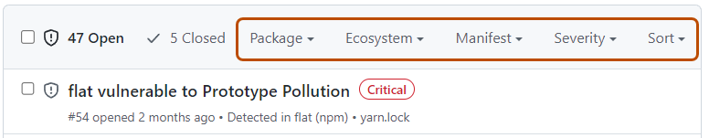
Type directly in the search bar to filter alerts, including full-text search across alert details and related security advisories.
Click a label on an alert to automatically filter the list by that label.
To identify alerts that affect development dependencies, filter by the scope:development filter or look for alerts labeled "Development". This can help you prioritize alerts that affect production dependencies first.
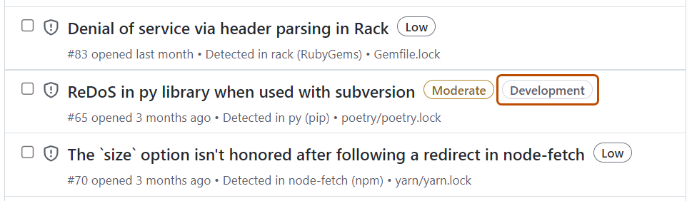
Click an alert to view its details. Alerts for development-scoped dependencies include a "Development" label in the "Tags" section on the alert details page.
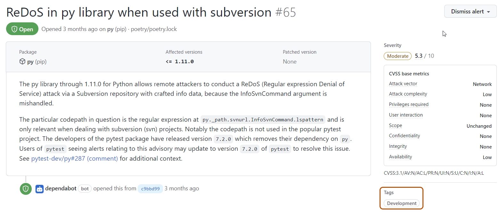
On the right panel, assign ownership for the alert:
When you assign an alert to an agent, a dialog appears where you can optionally:
Optionally, to suggest an improvement to the related security advisory, on the right-hand side of the alert details page, click Suggest improvements for this advisory on the GitHub Advisory Database. See Editing security advisories in the GitHub Advisory Database.
For more information about supported ecosystems and manifest files for dependency scope, see Supported ecosystems and manifests for dependency scope.
For a complete list of available filters, see Dependabot alert filters.
To retrieve alerts programmatically, see the REST API endpoints for Dependabot alerts.
You can review the details of a Dependabot alert to understand the vulnerability and how to fix it.
View the details for an alert. For more information, see Viewing and prioritizing Dependabot alerts (above).
If you have Dependabot security updates enabled, there may be a link to a pull request that will fix the dependency. Alternatively, you can click Create Dependabot security update at the top of the alert details page to create a pull request.
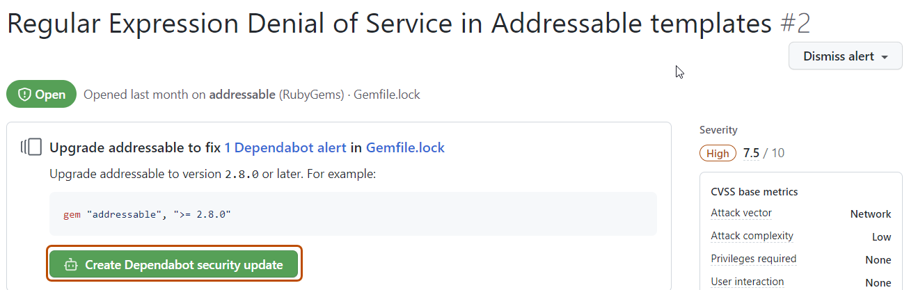
Optionally, if you do not use Dependabot security updates, you can use the information on the page to decide which version of the dependency to upgrade to and create a pull request to update the dependency to a secure version.
When you're ready to update your dependency and resolve the vulnerability, merge the pull request.
Each pull request raised by Dependabot includes information on commands you can use to control Dependabot. For more information, see Managing pull requests for dependency updates.
Note
You can only dismiss open alerts.
If you schedule extensive work to upgrade a dependency, or decide that an alert does not need to be fixed, you can dismiss the alert. Dismissing alerts that you have already assessed makes it easier to triage new alerts as they appear.
Select the "Dismiss" dropdown, and click a reason for dismissing the alert. Unfixed dismissed alerts can be reopened later.
Optionally, add a dismissal comment. The dismissal comment will be added to the alert timeline and can be used as justification during auditing and reporting. You can retrieve or set a comment by using the GraphQL API. The comment is contained in the dismissComment field. For more information, see Dependabot in the GraphQL API documentation.
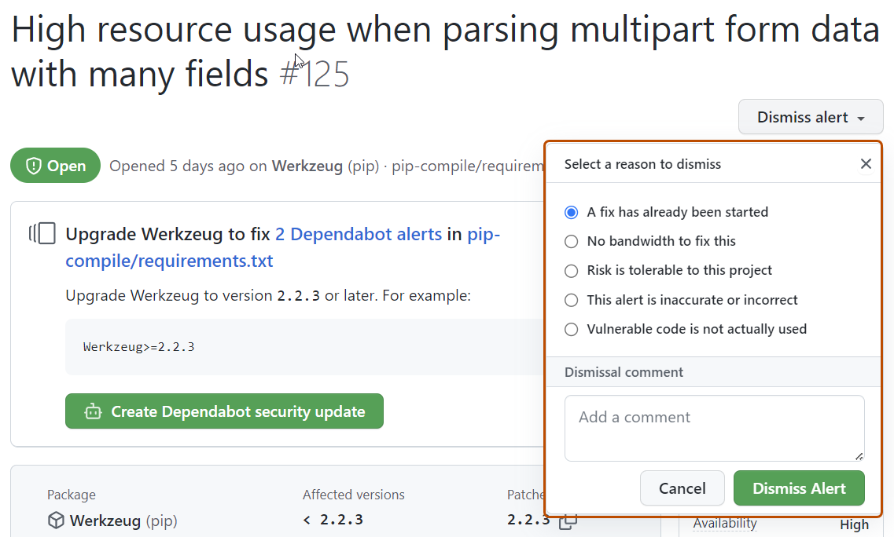
Click Dismiss alert.
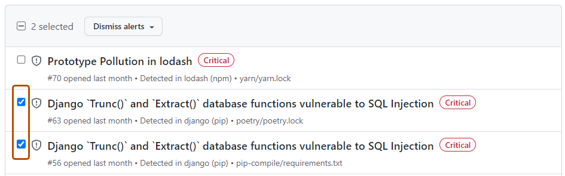
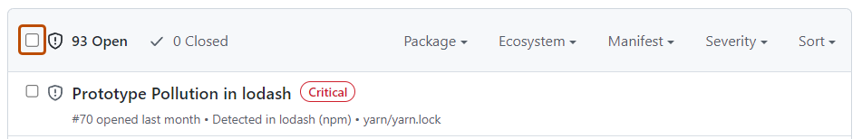
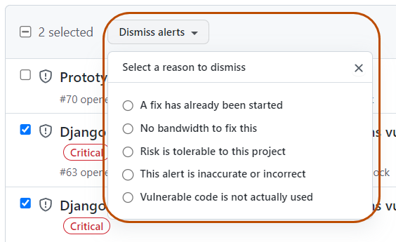
You can view all open alerts, and you can reopen alerts that have been previously dismissed. Closed alerts that have already been fixed cannot be reopened.
On GitHub, navigate to the main page of the repository.
Under the repository name, click the Security and quality tab. If you cannot see the " Security and quality" tab, select the dropdown menu, and then click Security and quality.
In the "Findings" section of the sidebar, select the Dependabot dropdown menu, then click Vulnerabilities.
To just view closed alerts, click Closed.
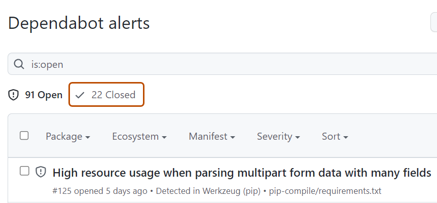
Click the alert that you would like to view or update.
Optionally, if the alert was dismissed and you wish to reopen it, click Reopen. Alerts that have already been fixed cannot be reopened.
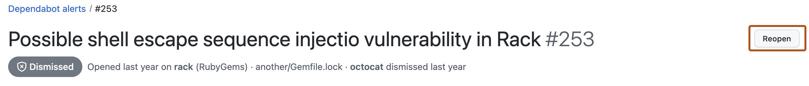
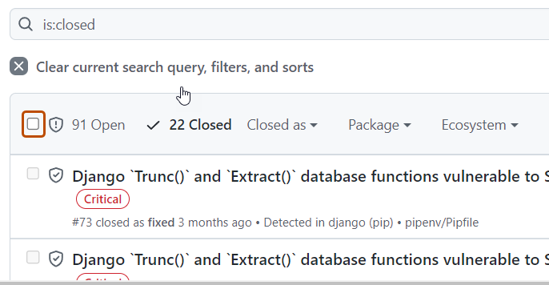
When a member of your organization performs an action related to Dependabot alerts, you can review the actions in the audit log. For more information about accessing the log, see Reviewing the audit log for your organization.
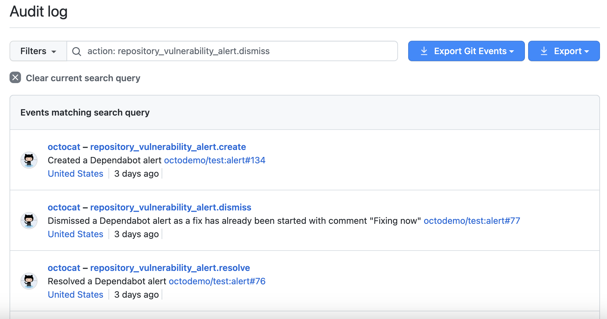
Events in your audit log for Dependabot alerts include details such as who performed the action, what the action was, and when the action was performed. The event also includes a link to the alert itself. When a member of your organization dismisses an alert, the event displays the dismissal reason and comment. For information on the Dependabot alerts actions, see the repository_vulnerability_alert category in Audit log events for your organization.